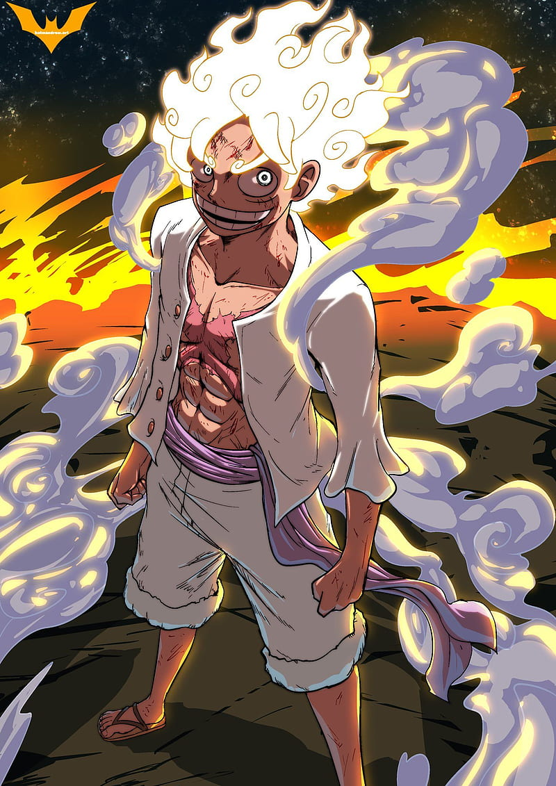
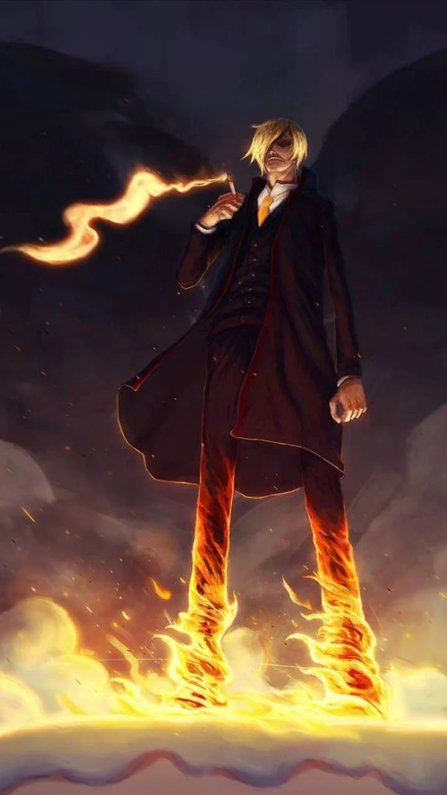

Monkey D. Luffy
Monkey D. Luffy é o protagonista da série. Ele é um jovem pirata com poderes de borracha, após comer a Gomu Gomu no Mi, e lidera o seu bando, os Piratas do Chapéu de Palha, em busca do tesouro One Piece.
Roronoa Zoro

Roronoa Zoro é o espadachim dos Piratas do Chapéu de Palha. Ele é conhecido por sua habilidade com a espada, carrega três delas em seu corpo e é um dos mais fortes membros do bando.
Vinsmoke Sanji
Sanji é o cozinheiro dos Piratas do Chapéu de Palha. Ele é conhecido por sua habilidade em artes marciais, especialmente em chutes, e por sua devoção às mulheres.
Nami

Nami é a navegadora dos Piratas do Chapéu de Palha. Ela é conhecida por seu amor por dinheiro e por sua habilidade em prever o clima, o que a torna crucial para a navegação da tripulação.